012026Film · Stage
Kinepolis Film Distribution
Tijdens mijn stage bij Kinepolis Film Distribution nam ik de rol van marketingassistent op me. Ik hield me vooral bezig met het monteren van trailers en teasers en het grafisch ontwerpen van quizzes.
Bekijk project ↗
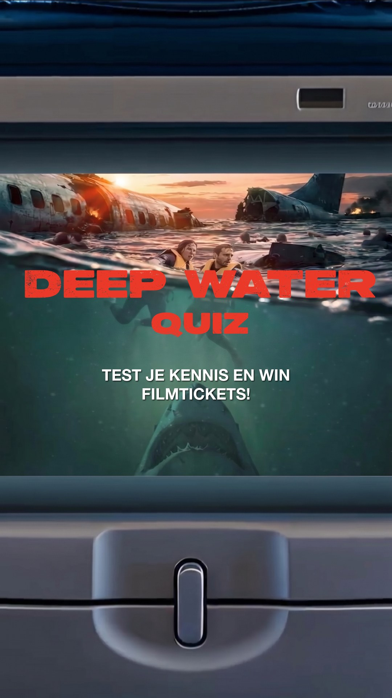
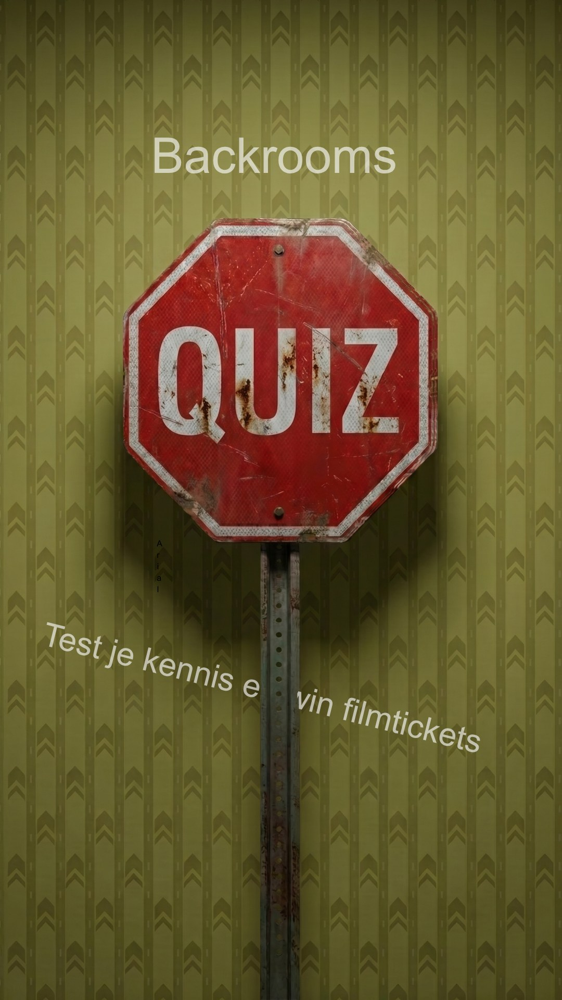
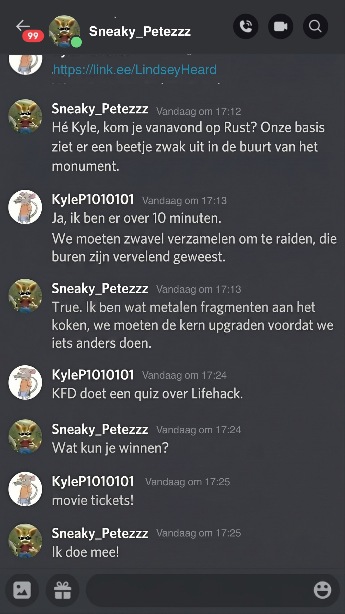
Keep scrolling voor het volgende project ↓
022026Fashion · Stage
Hampton Bays
Tijdens mijn stage bij het Belgische modemerk Hampton Bays was ik verantwoordelijk voor de volledige marketing, omdat er geen aparte marketingafdeling was.
Bekijk project ↗Keep scrolling voor het volgende project ↓
032025Event · Stage
Pinko
Voor PINKO deed ik twee dingen. In oktober 2025 liep ik een dagstage op een trunkshow in The Nine in Brussel, waar ik de content van de show opnam.
Bekijk project ↗Keep scrolling voor het volgende project ↓
042026Retail · Concept
Maasmechelen Village
Voor mijn bachelorproef ontwikkelde ik een innovatief, transmediaal retailconcept voor Maasmechelen Village in samenwerking met Disney: Disney Winter Village. Het project combineert offline beleving met online engagement om de klassieke winkelervaring in het winterseizoen te transformeren.
Bekijk project ↗Keep scrolling voor het volgende project ↓
052025Editorial · Concept
The Fifth
In mijn tweede jaar kregen we als eindwerk de opdracht om een eigen magazine te ontwikkelen. Zo ontstond The Fifth.
Bekijk project ↗Keep scrolling voor het volgende project ↓
062026Campagne · Fictief
Rhode Christmas
Voor deze fictieve kerstcampagne bedacht ik een feestelijke editie voor Rhode. De Peptide Lip Tints, de Glazing Milk en de Highlight Milk krijgen kerstsmaken en -kleuren: peppermint glaze, gingerbread, sugar cookie en mulled wine.
Bekijk project ↗
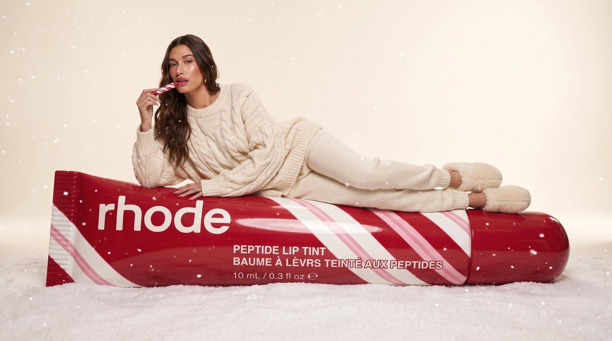
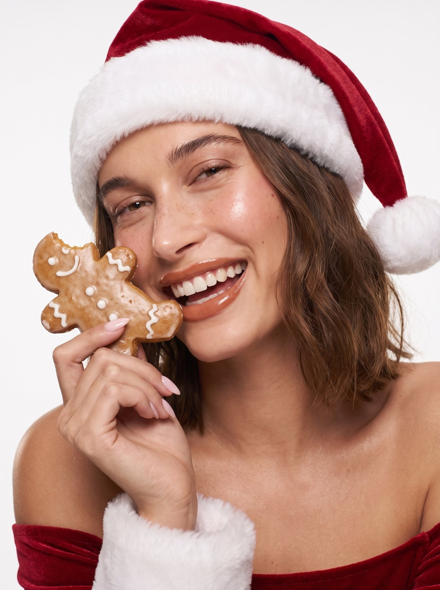
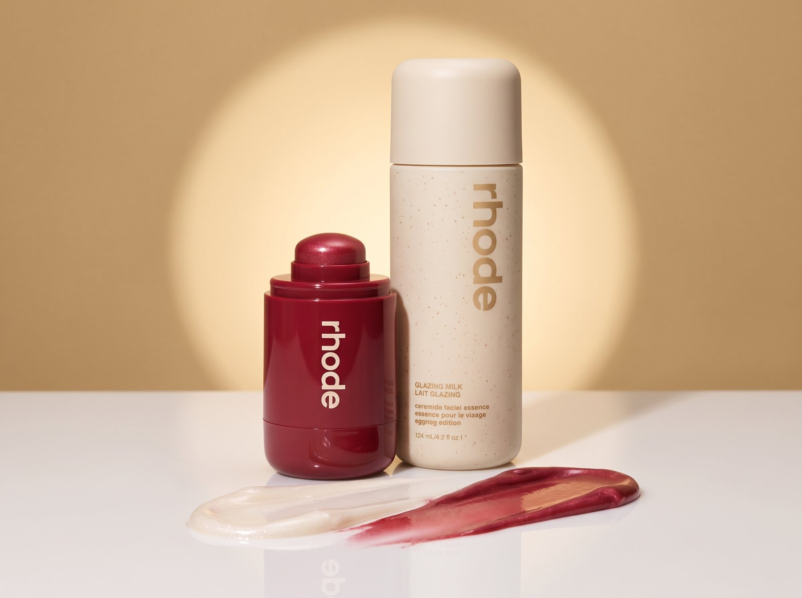
Keep scrolling voor het volgende project ↓
072026Campagne · Fictief
Rhode Lip Boost
Voor deze conceptuele reclame ontwikkelde ik een campagne voor mannen rond ruwe schoonheid voor Rhode, met de Peptide Lip Boost als cultfavoriet.
Bekijk project ↗
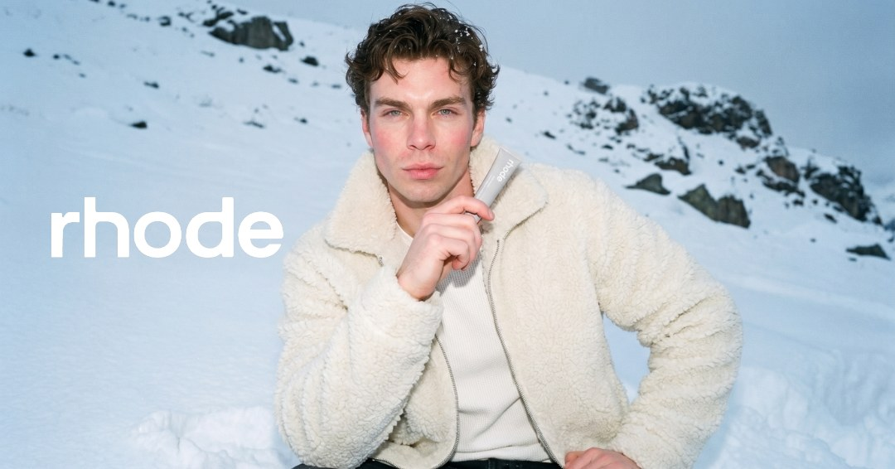
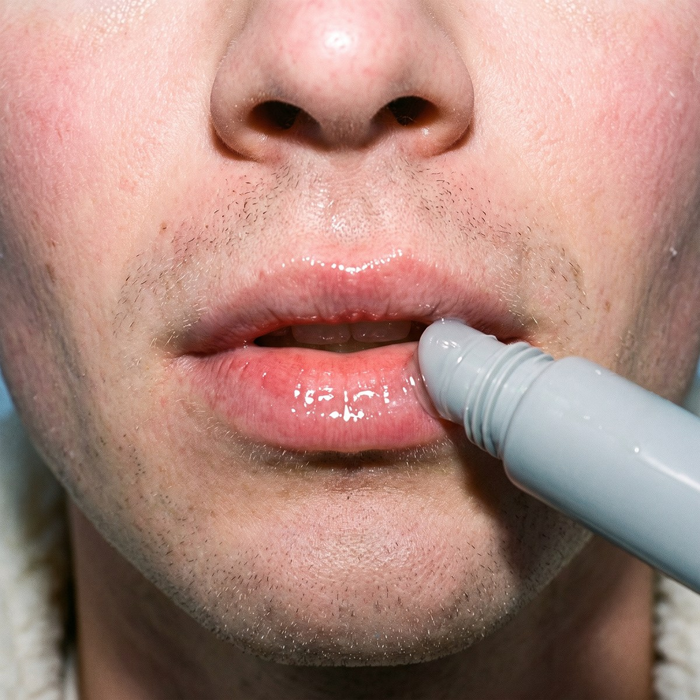
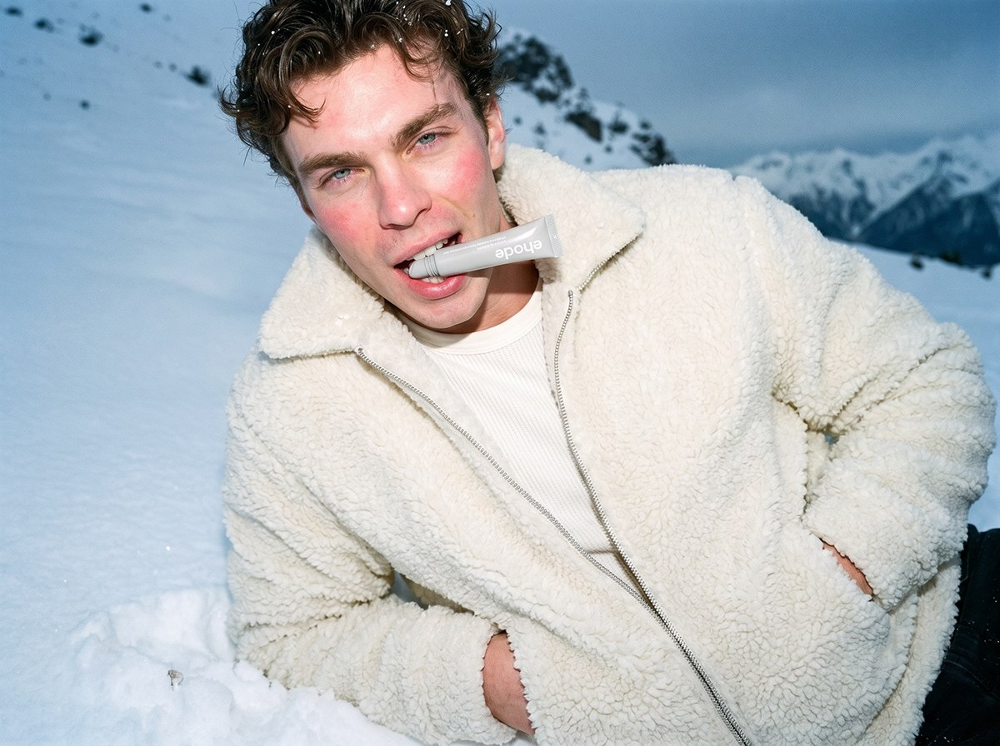
Keep scrolling voor het volgende project ↓
082026Editorial · Fictief
IOAN Sun Set 50
Deze fictieve campagne voor de Sun Set 50 van IOAN is een cinematografische grooming-productie op een luxueus Mediterraans zwembaddek tijdens golden hour.
Bekijk project ↗Keep scrolling voor het volgende project ↓
092026Social · School
Lipton Sparkling
Voor een schoolopdracht in Photoshop maakte ik een Instagram-carrousel voor Lipton Ice Tea Sparkling. De opdracht: het drankje centraal zetten en volledig in de stijl van het merk werken, met zichtbare samenhang in kleuren, logo, tekst en vormen.
Bekijk project ↗
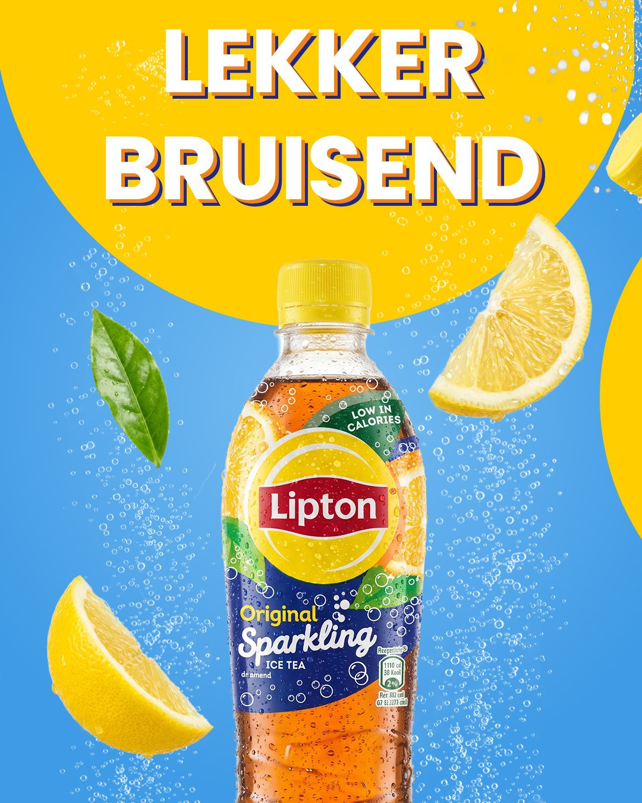
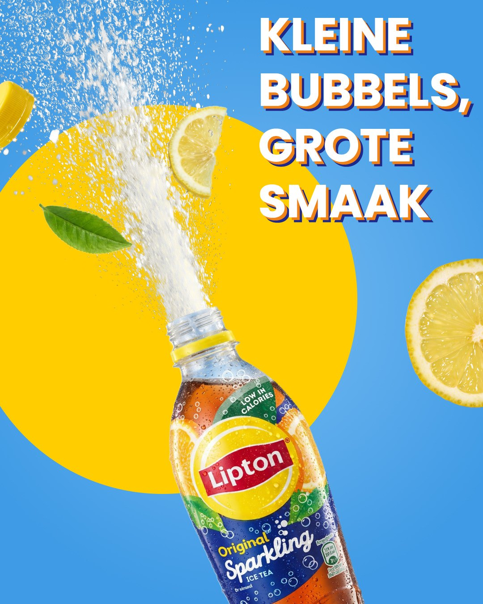
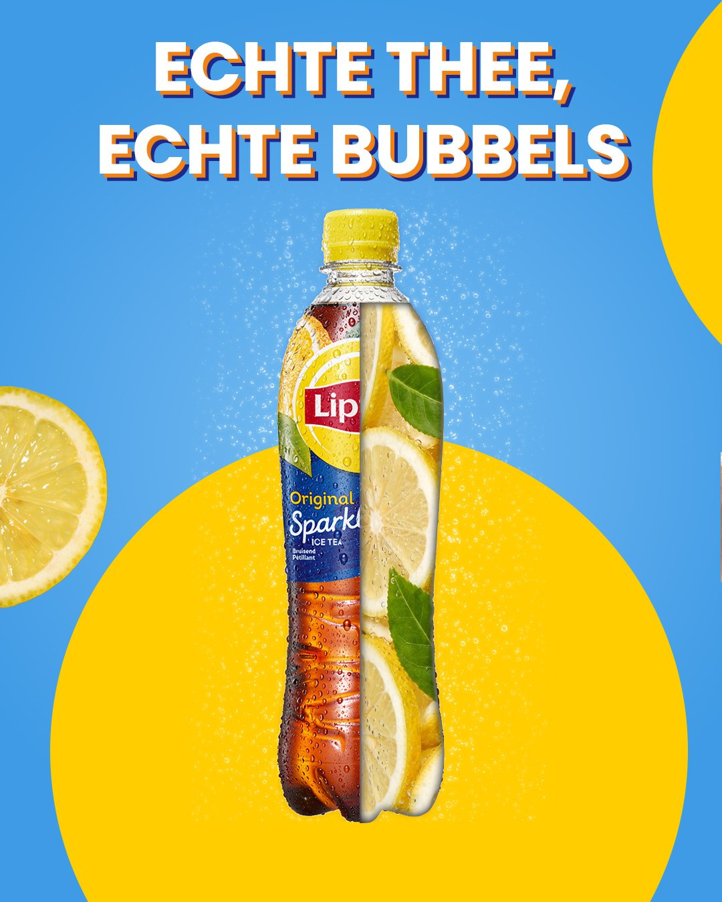
Dat was het. Laten we praten ↓